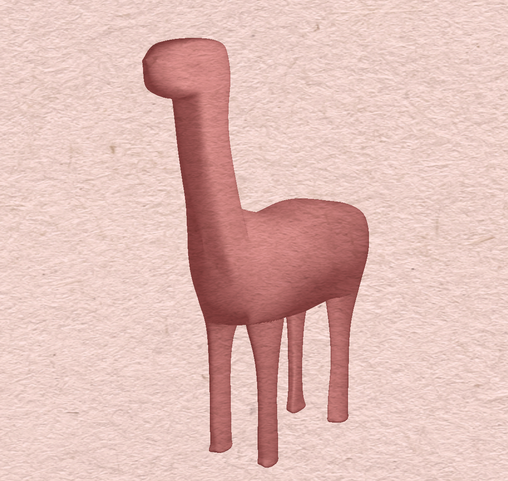

|
The earliest forms of animation started out in 2D, using cell shading techniques to bring color to their stories. This was a frame by frame process where artists were redrawing every single millisecond of the movie. Looking to speed up this process, CG animation soon came along, where films were created in 3D modeling and animation softwares, and rendered in order to generate each frame. Although 3D animation has optimized the development of animated projects, the traditional 2D style of animation was lost. However, since we all love the 2D animation style, we wanted to explore how to incorporate this traditional style into 3D programs. Not only would it allow for 3D animation to have an organic touch that is so apparent in tradition animation, but it would greatly increase the speed in which animation is produced, since artists would not have to labor over every fram of a scene. Thus, for our project, we created a shader that aims to achieve this hand drawn and cel shaded quality in a shader that can be applied to any 3D model. More specifically, our group tackled how to create a toon and line art shader that renders 3D models as if 2D drawn objects in a cartoonish-stylized way.
Technical Approach
Toon Shader
To implement the toon shader, we built upon our Project 4 Blinn-Phong shader. We modified the ambient component to be a color which is determined by the user.
The diffuse component uses the dot product of the world space light position and the world normal to calculate the light intensity. We then used the smoothstep function to blend the values between the ambient and diffuse light. The smoothstep function takes in a lower bound, an upper bound, and a value expected to be between these bounds. It then returns a value between 0 and 1 based on the extent to which the third value is within the bounds. This allows us to smoothly blend between color values and create a sharp transition between shadow and light.
For the specular component, we use the Blinn-Phong model and take the dot product of the normal of the surface and the half vector. Once again, we use the same smoothstep to toonify the specular highlight and give it a sharp contrast.
Lastly, for the rim light, we calculated it as the inverted dot product of the normal and the view direction. This had the effect of a radial gradient around the entire surface so we modified it to appear only along the surfaces that are illuminated. We then used a rim threshold value to determine how far the rim light extends and how much it will taper off. Finally, we toonify using smoothstep.
The reference we used was primarily useful for learning about the smoothstep function and rim light calculations. Other than that, the Project 4 Blinn-Phong shader was the main foundation that we built upon.
Line Art Shader
After completing a pass at the toon shader, we proceeded to implement the line art portion. To overlay the line art on top of our toon shader, we completed 3 render passes. The first renders our original geometry with our toon shader. The second stores the normals and the depth of our model using Sobel Edge Detection. The 3rd render maps the previous two shaders as textures, uv mapped according to a quadrilateral. It uses Sobel Edge Detection to detect variations in depth, which allows, when combined with the normals, line thickness variation based on the distance or depth of the model. The shader finally adds together the outlines and the original toon shading to produce a toon-shaded model with line art.Through Sobel Edge Detection, we convolve our image by a G matrix (a matrix with negative values in one row/column, zeros in the center, and positive values in the other row/column) in the x and y direction. Convolutions work over discrete spaces, whereas our textures are mapped via continuous UV coordinates from 0 to 1. We convert textures to discrete image "pixels" by defining 1 pixel as 1/(screen resolution), multiplied by the outline width. The shader multiplies G by the value of the adjacent pixels. This will produce a grayscale image of where the edges of our object are with adjustable edge width. For the outlines-only line art, we convolve G on only depth information. The outline-norms line art convolves G on both depth and normal data independently, then averages the two results together and applies smoothstep to make the outlines crisp. Accounting for sharp differences in normals allows the outliner to pick up on details inside the model, such as noses and hair, that depth information by itself cannot detect.
The passes are implemented using the EffectComposer in Three.js, which simplifies some of the steps involved in multi-pass rendering such as generating a full-screen quadrilateral and writing the previous render to a texture. We found that Three.js to simplify writing the OpenGL code allowed us to focus on writing our shaders and quickly import many different models to test with our shaders.
Results
Try out our shaders yourself! Note: It may take some time to load
We learned a lot about the research process, techniques in implementation, theory behind cel-shaders, and how to construct a custom shader for our own while working on this project! Being all a part of the animation community here at Berkeley, we were all very interested in how we could apply our own artistic and stylistic visions into our own personal animation projects. In the future, we can all use what we have learned here to supplement our own personal animation projects, as well as create more shaders in the future for other's to hopefully use in their own projects! Overall, this project was very inspiring and really helped us apply the knowledge that we have gain in this course into something not only we are interested in, but also into future shader projects we can create for ourselves and for our animation community.
|
|
|
|
|  | ||
We also created a watercolor shader for fun!
...and a thermal shader!
References
Toon Shader Reference
Watercolor Shader Reference
How to render outlines in WebGL
Line drawings from 3D models: a tutorial
Contributions from each member
We all worked together to create the general idea, gather research, and figure out how to implement our toonshader. Akemi Modified the Blinn-Phong Shader to create the Toon Shader. Natalie Kemper helped modify the toon shader and provided boy model reference. Christine Co helped with researching toon and line art shader strategies and implementations. Ryan created the three.js interface and added the render pass for outlines and watercolor.